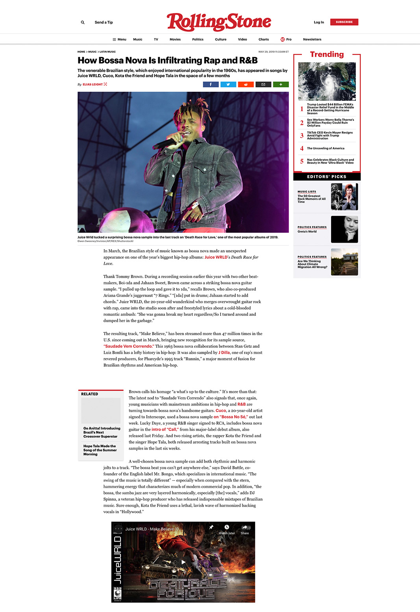
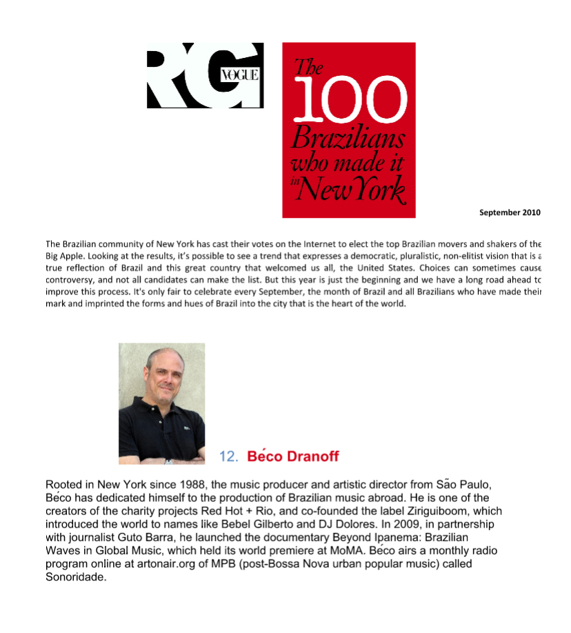
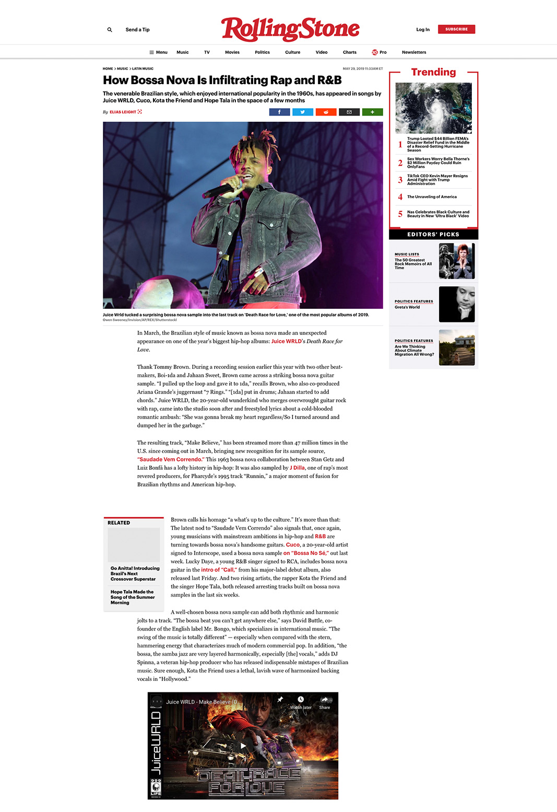
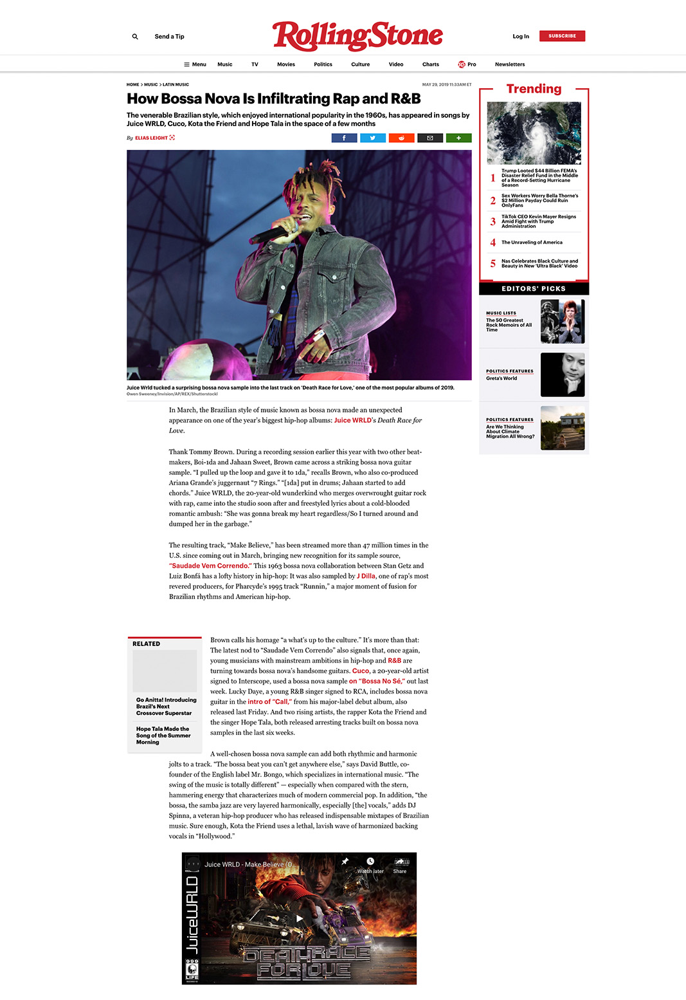
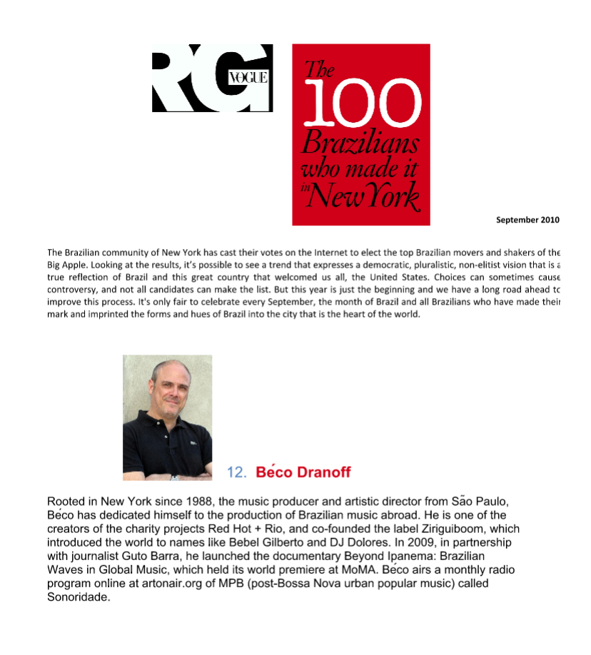
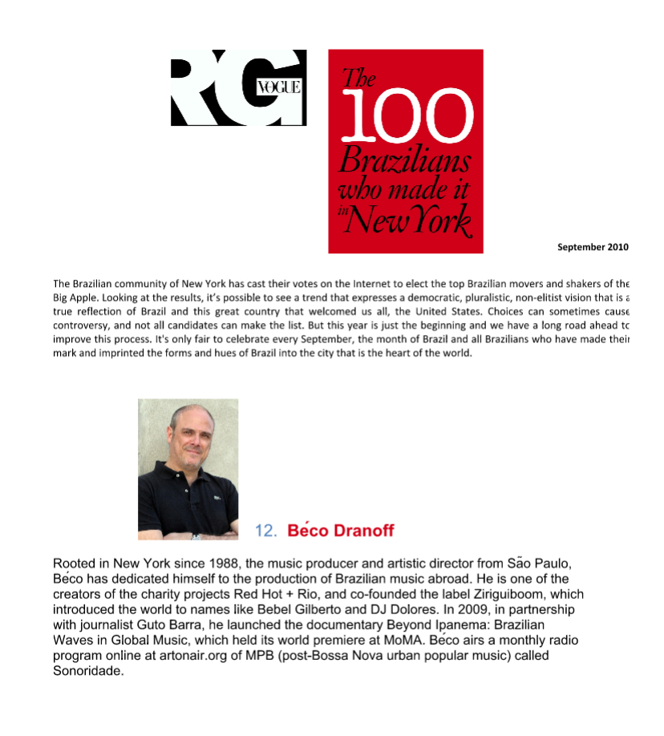

In the '60s, the Brazilian music scene exploded with a brand new movement called tropicalia. Later this month the Red Hot Organization will release Red Hot + Rio 2, a collection of those songs re-envisioned. Red Hot producer Beco Dranoff joins us for a primer on the genre.


Video / interviews
“Travel + Escape Magazine caught up with Brazilian music expert Béco Dranoff at New York City's Clocktower Gallery, where he records his monthly Brazilian music-themed online radio show, Sonoridade.” – June, 2013.
Entrevista para ‘On Behalf Of Brazil’ por Julieta Schildkenecht. - 2018.
Record collectors DJ Greg Caz and Béco Dranoff discuss the sweeping career of Elza Soares and the wealth of Brazilian music. RED BULL MUSIC ACADEMY - 2017
Béco Speaks at M.A.T.E Conference / Porto Alegre - 2017
Espaço Lalá / Festival Oferendas, Salvador, Bahia - 2020
Instalive: Música e Filantropia. Live with music critic Sérgio Martins, São Paulo - 2020
 

 
